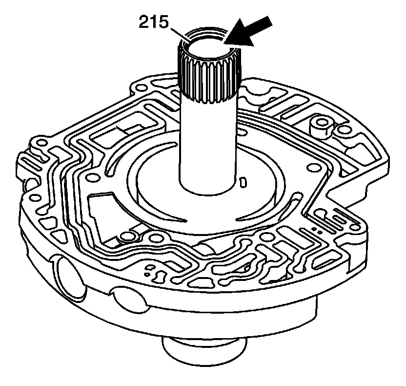
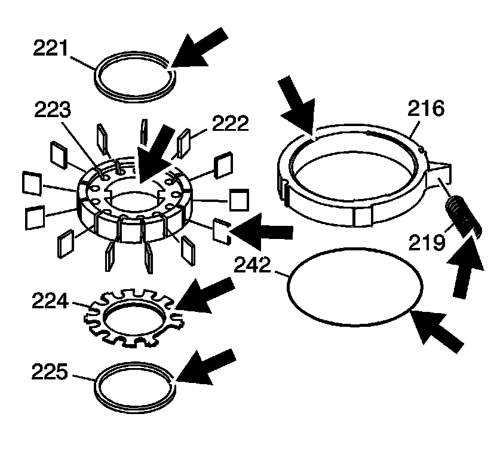
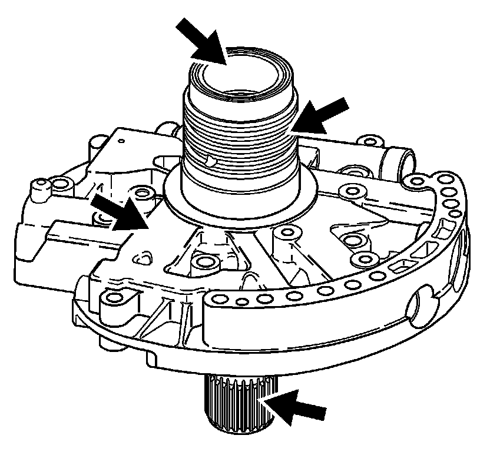
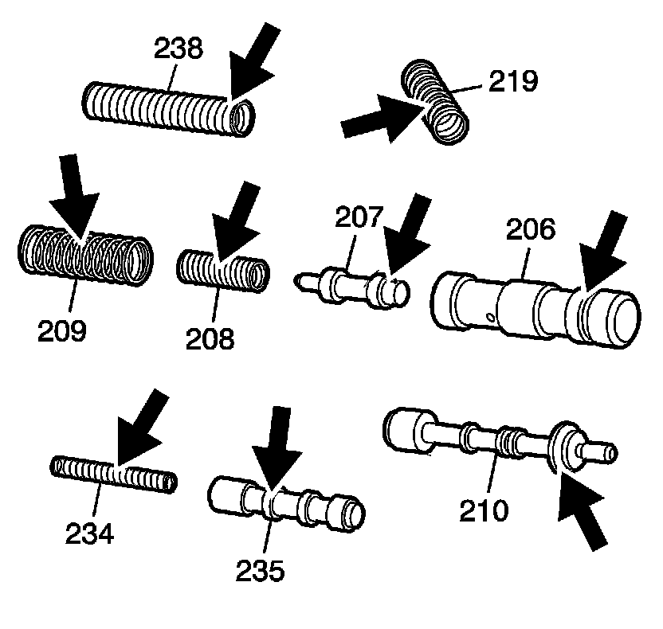
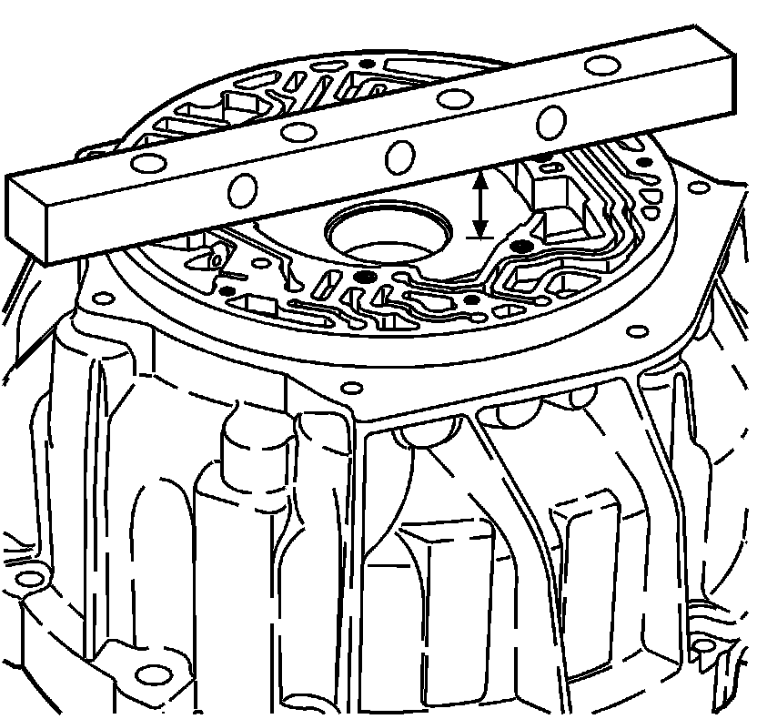
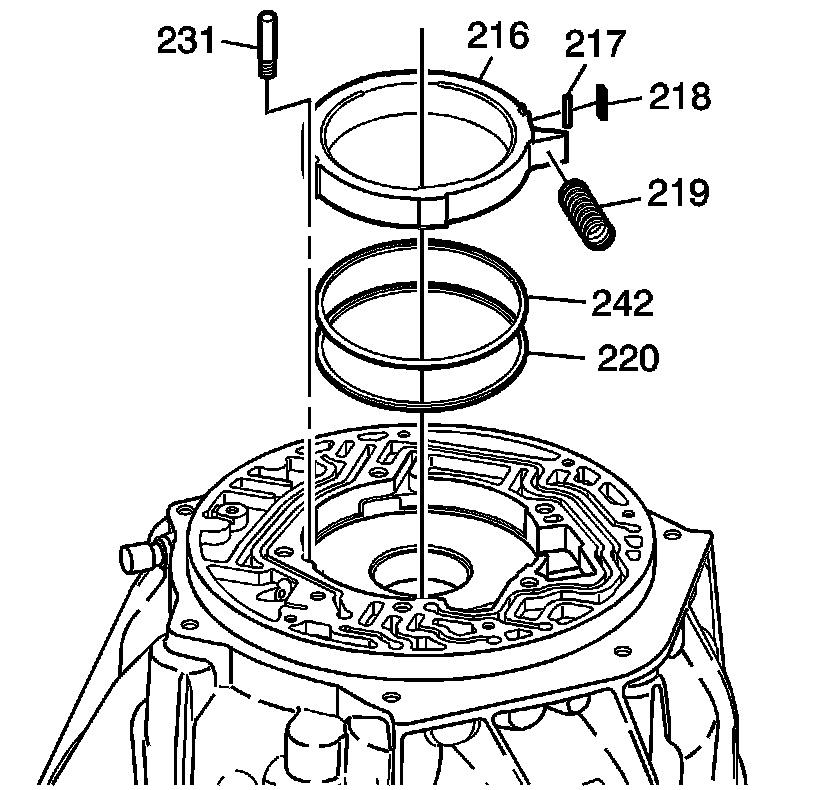
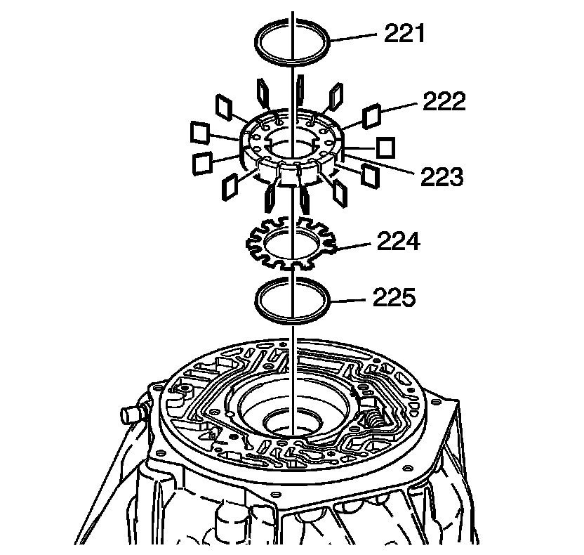
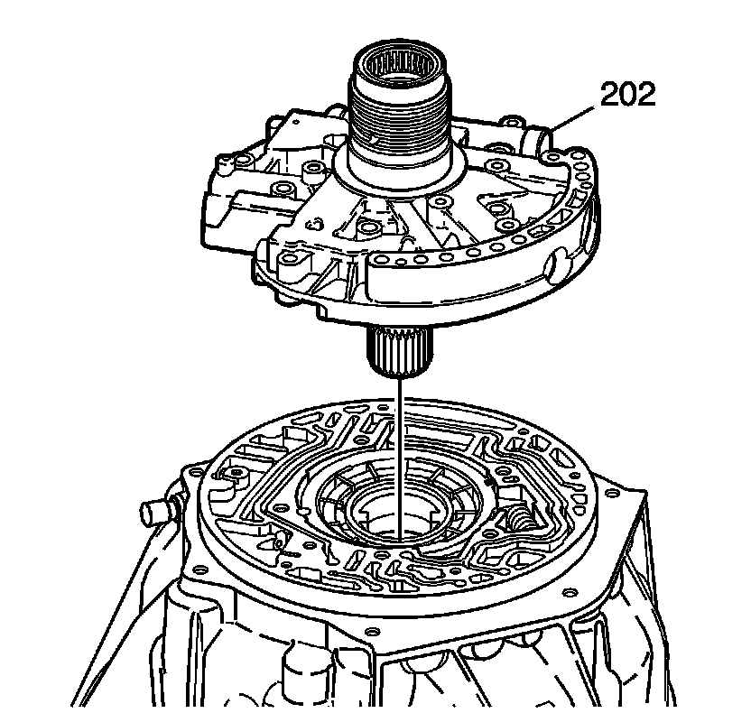
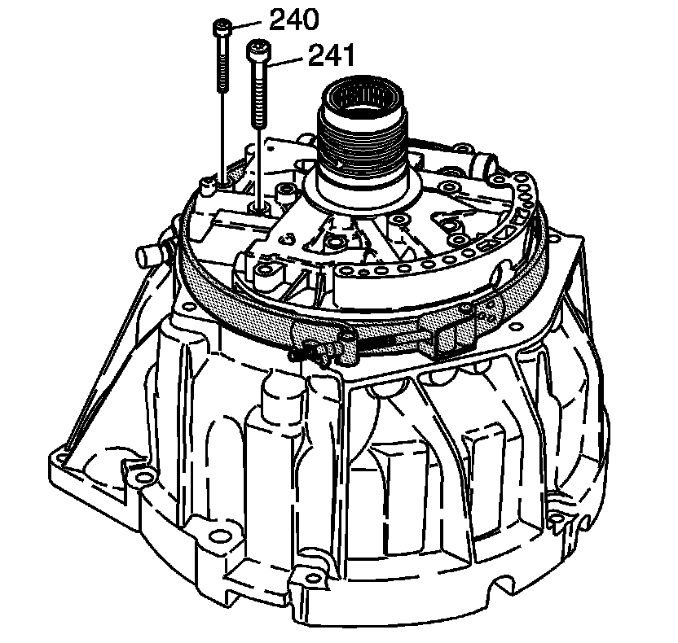
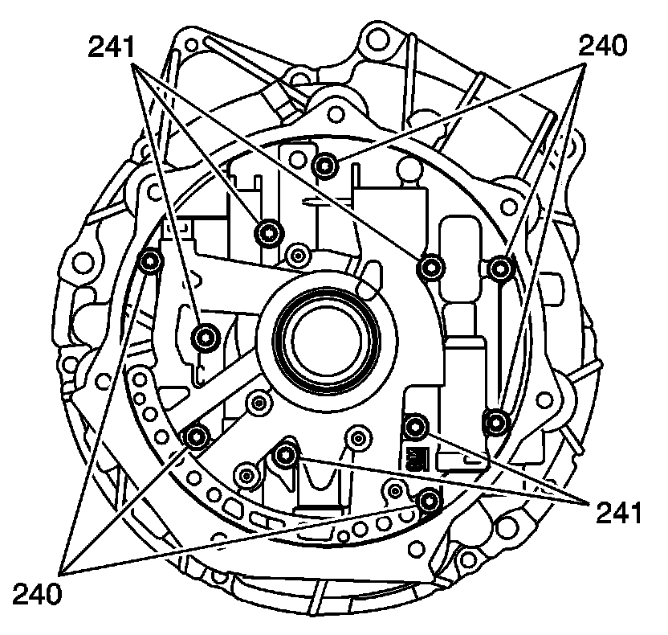

Transmission Fluid Pump Assemble
Transmission Fluid Pump Assemble
Tools Required
J 21368 Pump Body Cover Alignment Band

1. Inspect the bushing (215) for wear - not serviceable.

2. Inspect the oil pump parts for the following:
* Worn, scored or gouged pump slide
* Cracks, wear or damage to the rotor or vanes
* Cuts or damage to the seals
* Broken priming springs

3. Inspect the oil pump housing for the following:
* Porosity
* Interconnected oil passages
* Damaged machined surfaces

4. Inspect the valves (207, 210, 235) and springs (208, 209, 234, 238, 219) for the following:
* Nicks or burrs on the valves
* Worn, distorted or cracked springs

5. Install the TCC control valve (235) and the TCC control valve spring (234).
6. Install the TCC control valve spring retainer (204).

7. Install the pressure relief valve (239) and spring (238).
8. Install the pressure valve spring retainer (211).

9. Install the pump cover seal (212) onto the new pump cover screen (213).
10. Install the pump cover screen (213).
11. Install the pump cover screen pin (211).

12. Install the pressure regulator valve (210), the pressure regulator valve spring (209), and the line boost valve spring (208).
13. Install the line boost valve bushing seal (205) onto the bushing (206).
14. Install the line boost valve (207) and the bushing (206).
15. Install the line boost valve bushing retainer (204).

16. Install the reverse clutch housing fluid seal rings (200).

17. Measure the distance from the bottom of the gage bar to the pump body. Refer to Transmission Fluid Pump Specifications (Transmission Fluid Pump Specifications) .
18. Measure the thickness of pump slide.
19. Select the proper size, refer to Transmission Fluid Pump Specifications (Transmission Fluid Pump Specifications) .
20. Measure the thickness of the pump rotor.
21. Select the proper size rotor refer to Transmission Fluid Pump Specifications (Transmission Fluid Pump Specifications) .

22. Install the fluid pump support (217), the slide seal (218) and the fluid pump slide rings (220), and the fluid pump slide o-ring seal (242) onto the pump slide (216).
23. Install the slide pin (231).
Important: The fluid pump slide (216) is selective.
24. Install the pump slide (216).
25. Using a screwdriver install the slide spring (219).

26. Install the fluid pump vane ring (225).
27. Install the pump rotor guide (224).
Important: The fluid pump rotor (223) is selective.
28. Install the pump rotor (223).
29. Install the pump vanes (222).
30. Install the pump vane ring (221).

31. Install the pump cover housing (202) onto the converter housing.

32. Install J 21368 and tighten.

Notice: Refer to Fastener Notice .
33. Install the oil pump housing bolts (240, 241).
* Tighten the fluid pump housing bolts (240) to 11 N.m (8 lb ft).
* Tighten the fluid pump housing bolts (241) to 22 N.m (16 lb ft).
34. Remove J 21368 .